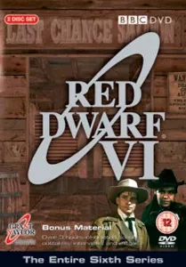

The genetics
The monsters of the episode are genetically engineered life forms, or GELFs, a category of creatures in the Red Dwarf universe. The Psirens are shape-changing predators that use psychic illusions, based on what their victims believe about themselves, to lure space travellers to their deaths, like the sirens of the Odyssey. The episode does not say who engineered them or why; genetic engineering is simply the origin of a menace, and the story is a comic horror adventure built around the crew's attempts to tell friends from impostors. The idea that engineered organisms could change shape or project telepathic illusions is fantasy.
How genetics is portrayed
- Overall portrayal of genetics
- negative Genetic engineering appears only as the origin of deceptive monsters, though no creator appears and the tone is comic.
- Outcome of the genetic intervention
- negative The genetically engineered Psirens are predators that wreck ships and try to kill the crew; nothing good comes from their creation.
The story
In this Red Dwarf episode, Lister wakes with amnesia aboard the small ship Starbug, and Kryten explains that the crew has spent 200 years chasing their stolen mother ship, Red Dwarf. Taking a shortcut through an asteroid belt, they find it is a graveyard of ships haunted by Psirens, shape-changing creatures that lure travellers with telepathic illusions to feast on their brains. Starbug crashes, and Lister has to go outside to free it; a Psiren tries to seduce him with an illusion, and another, disguised as Kryten, gives itself away by calling him Dave. Back on board, there are two Listers, and the crew identifies the impostor by asking both to play the guitar: the real Lister is terrible, while the Psiren copied his own flattering self-image. The wounded Psiren traps Kryten in the waste compactor, but Kryten, crushed into a cube, kills it, and the crew continues the chase.